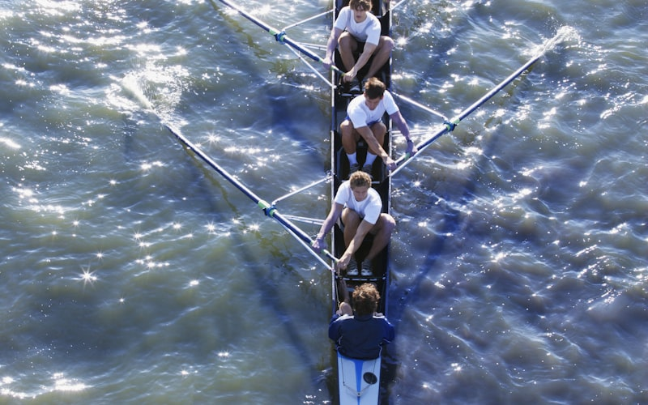
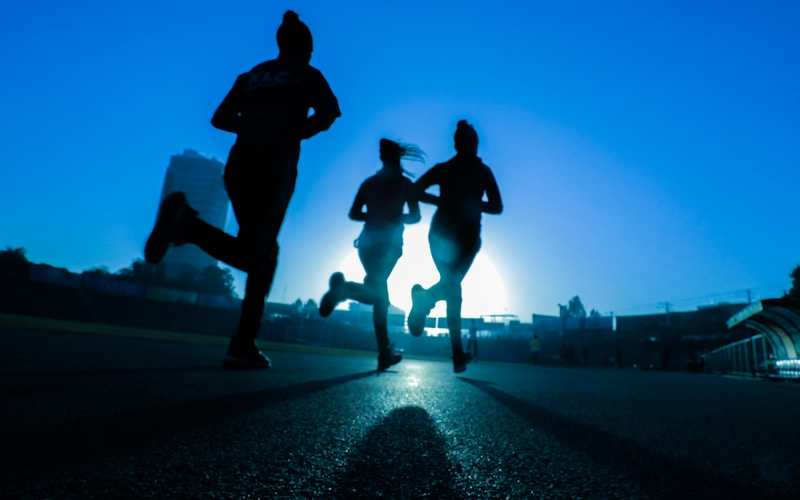
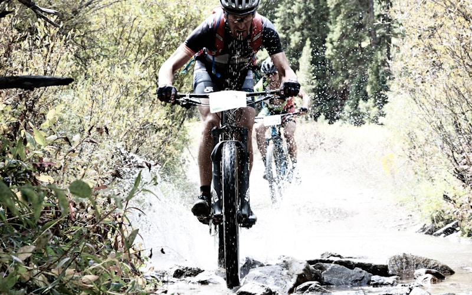

Sports
Where I compete, and where I win. Polo has been my sport since I was 8.

Polo & Equestrian
I've been riding since I was 8, and polo has been one of the biggest parts of my life ever since. It's one of the most demanding sports there is: controlling a horse at a full gallop with one hand while swinging a mallet with the other, reading the play, your teammates, and your horse all at once.
Today I'm the best polo player in my age group in the entire state of Arizona, and the top youth player at both Arizona Polo Club and Cave Creek Polo Club.
Off the polo field, I compete in hunter-style riding, where horse and rider are judged on form over fences. I took 2nd place in a regional hunter competition and won three 1st-place medals across Arizona riding events.
Eight years in the saddle taught me things no classroom could: patience, nerve, and how to earn the trust of a thousand-pound teammate.

Rowing
Raced for Brophy crew in regattas across Arizona, California, Long Beach, and San Diego.
Trained year-round, building the endurance to race crews from across the Southwest and West Coast.

Cross Country
Ran for Brophy's cross country team in fall 2025 and competed in multiple meets, with early-morning practices year-round.

Mountain Biking
Regular trail riding across Arizona terrain. One of my go-to ways to unwind and explore the desert landscape.